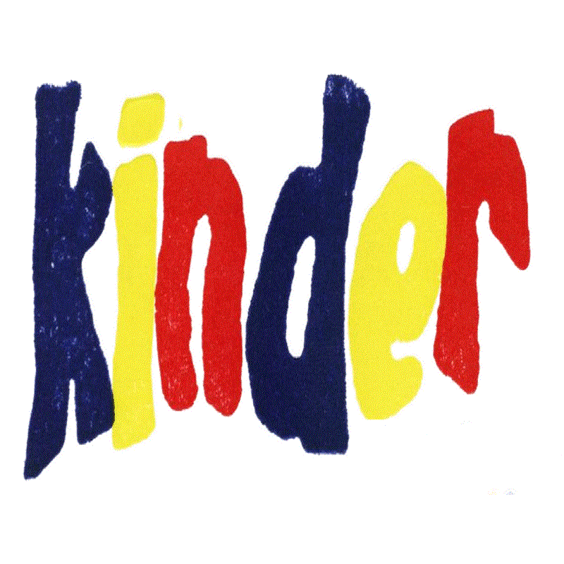
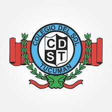
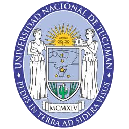

Colegio Giosuè Carducci
Nivel primario. Colegio con enseñanza del idioma italiano.
1993 — 1997 (5 años)

Colegio Kinder
Nivel primario. Primaria del Colegio del Sol Tucumán.
1998 — 1998 (1 año)

Colegio del Sol Tucumán
Nivel secundario. Bachiller con orientación en producción de bienes y servicios.
1999 — 2004 (6 años)

Facultad de Ciencias Exactas y Tecnología (U.N.T.)
Nivel universitario. Carrera de Ingeniería Electrónica con orientación en Telecomunicaciones.
2008 — 2022 (15 años)